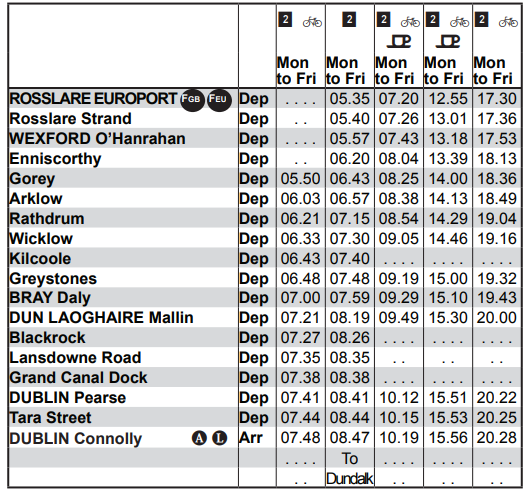
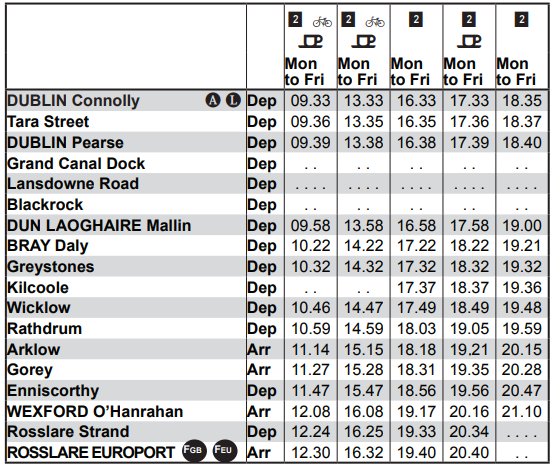

Trains
The rail network is probably the most consistant of all the public transport options available to commuters. However high ticket prices aswell as a large volume of users can be a large deterant. Combine that with the fact that it doesn't run very often and other alternatives can seem more attractive. Once again it depends on the commuter whether this option is the best for them.
Timetable to Dublin:

Timetable from Dublin:
